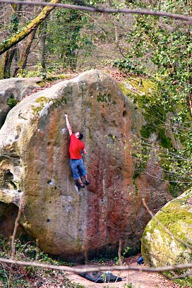

Eidg. anerkannter Psychotherapeut · Systemischer Supervisor
Supervision & Selbsterfahrung
„Nimm die Menschen, wie sie sind, andere gibt es nicht.“
– Konrad Adenauer
Ich lebe mit meiner Partnerin und unseren zwei Kindern in Zürich. Meine Freizeit verbringe ich in erster Linie mit ihnen. Neben der Familie sind mir meine Freundschaften sehr wichtig. In der Zeit, die darüber hinaus bleibt, findet man mich öfters in der Boulderhalle und manchmal beim Wandern, Improtheater oder mit einem Schachbrett in einer unprätentiösen Beiz in Zürich. Werte, die mir in meinem Privatleben wichtig sind, und die ich gerne meinen Kindern weitergeben möchte, sind Genügsamkeit, Flexibilität im Denken und Vertrauen in die eigenen Qualitäten und Fähigkeiten
Mein berufliches Denken und Handeln sind geprägt von meinen systematischen Ausbildungen zum Psychotherapeuten und Supervisor. Zentral ist hierbei die Annahme, dass menschliches Verhalten in erster Linie vor dem Hintergrund des sozialen Kontexts verstanden werden kann. Weitere Werte, die mir bei meiner Arbeit essentiell erscheinen, sind Neugier, Humor, Perspektivenvielfalt, Kooperation auf Augenhöhe, Transparenz und Allparteilichkeit. Dankbar bin ich im beruflichen Kontext auch für meine diversen Erfahrungen in der sozialen Arbeit, welche mir insbesondere die Wichtigkeit der persönlichen Beziehung aufgezeigt haben.

Supervision
„Erfolg ist die Fähigkeit, von einem Misserfolg zum anderen zu gehen, ohne seine Begeisterung zu verlieren.“ – Winston Churchill
Ich biete Supervision für psychologische und ärztliche Psychotherapeut*innen im Rahmen ihrer Weiterbildung sowie für Fachpersonen aus Gesundheits- und Sozialberufen an.
Supervision kann im Einzel- oder Gruppensetting stattfinden und eignet sich auch für Kliniken und Institutionen.
Spezialgebiete
Selbsterfahrung
„Verstehen kann man das Leben rückwärts; leben muss man es vorwärts.“ – Søren Kierkegaard
Selbsterfahrung richtet sich an psychologische und ärztliche Psychotherapeut*innen im Rahmen ihrer Weiterbildung.
Kontakt
Wenn Sie eine Anfrage haben oder einen ersten Kontakt wünschen, freue ich mich über Ihre Nachricht per E-Mail.
Luca Eugster
Eidg. anerkannter Psychotherapeut
Systemischer Supervisor
Universitätstrasse 65
8006 Zürich
Rechtliches
Luca Eugster
Eidg. anerkannter Psychotherapeut · Systemischer Supervisor
Universitätstrasse 65
8006 Zürich
Schweiz
Eidgenössisch anerkannter Psychotherapeut (Berufsbezeichnung verliehen in der Schweiz). Systemischer Supervisor (Ausbildung am Institut IEF, Zürich).
Rechtliches
Verantwortlich für die Datenbearbeitung im Sinne des Schweizer
Datenschutzgesetzes (revDSG) ist:
Luca Eugster, Universitätstrasse 65, 8006 Zürich,
hallo@luca-eugster.ch.
Diese Website ist eine reine Informationsseite. Es werden keine Kontaktformulare, keine Cookies, keine Analyse- oder Tracking-Werkzeuge und keine extern geladenen Schriftarten verwendet.
Die Website wird über GitHub Pages (GitHub, Inc., 88 Colin P. Kelly Jr. Street, San Francisco, CA 94107, USA) gehostet. Beim Aufruf der Seite werden technisch notwendige Daten wie die IP-Adresse, der verwendete Browser und der Zeitpunkt des Zugriffs verarbeitet und können dabei in die USA übermittelt werden. Diese Bearbeitung dient ausschliesslich dem sicheren und stabilen Betrieb der Website.
Wenn Sie per E-Mail Kontakt aufnehmen, werden Ihre Angaben zur Bearbeitung der Anfrage gespeichert und nicht an Dritte weitergegeben.
Sie haben im Rahmen der gesetzlichen Bestimmungen das Recht auf Auskunft, Berichtigung und Löschung Ihrer Personendaten. Wenden Sie sich dazu an die oben genannte Kontaktadresse.
Stand: Juni 2026